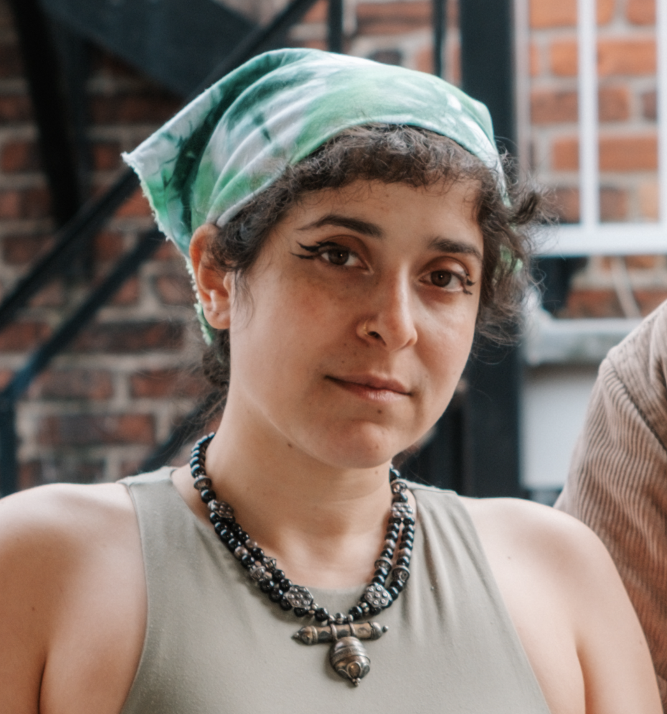
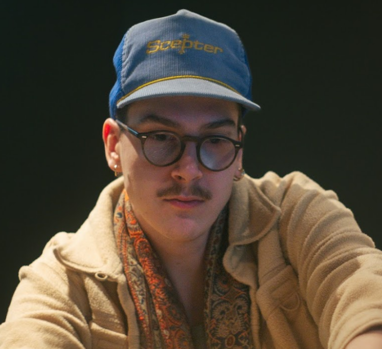

About
MANYBIRDS is an audiovisual performance collective based between Toronto and Montreal, founded in 2025 as a vessel for ongoing collaboration between new media artist Tara Rose Morris and composer Graham Steinman. The collective explores film, immersive installation, and performance as a site of ecological memory, speculative futures, and sensory entanglement. Available for festivals, domes, residencies, and commissions.

TARA ROSE MORRIS
Traditional animation inside visual performance systems; traversable three-dimensional collaged landscapes; body misrecognition and ecological estrangement.
Morris has shown works with arts institutions across North America including Gray Area, InterAccess, SXSW, VIFF, Nuit Blanche, and MAPP. She has a BA in Media Studies from Pomona College and an MSc in Fiction & Entertainment from SCI-Arc.

GRAHAM STEINMAN
Augmented field recordings; hybrid acoustic–synthetic composition; auditory worlds that blur organic and artificial sound.
Steinman has released two EPs and an album, migration’s only natural. He has a BA in Music and Anthropology from the University of Guelph, where he received the Norman and Audrey Harley Music Scholarship, the Gloria Guthrie Memorial Music Prize, and the Honours Music Prize.